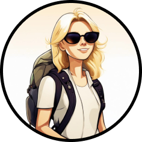
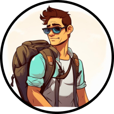
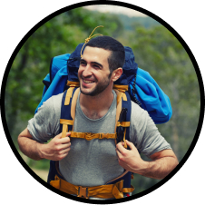
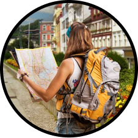

ОТЗЫВЫ
Главная
Отзывы
Фото
Контакты

Путешествие на Алтай было незабываемым. Я наслаждался красотой природы, катался на лошадях и посетил множество интересных мест. Местные жители были очень дружелюбными и гостеприимными. Я обязательно поеду от компании Isaw куда-нибудь снова!

Я недавно вернулся из путешествия в Арктику, и это было одно из самых незабываемых приключений в моей жизни. Мы отправились в круиз на ледоколе, и я был поражен красотой и величием северного сияния. Кроме того, мы посетили множество заповедников и национальных парков, где увидели удивительных животных, таких как белые медведи, моржи и тюлени.

Отдых в Турции оставил у меня самые приятные впечатления. Яркое солнце, ласковое море, чистые пляжи — что ещё нужно для отличного отдыха? Мне понравилось, что каждый день был наполнен событиями: днём мы ездили на экскурсии, а вечером посещали шоу-программы или дискотеки. Очень рекомендую всем посетить хамам — это незабываемые ощущения!

Москва — невероятно красивый город, который поражает своими масштабами и архитектурой. Я провела там неделю, и этого времени мне не хватило, чтобы изучить все достопримечательности. А ещё в этом городе просто фантастические виды для фотографий! Отдых получился замечательным лишь благодаря компании ISaw!!!